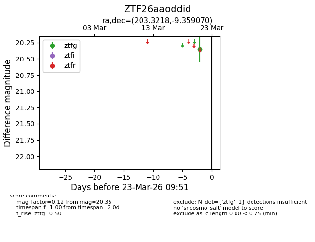
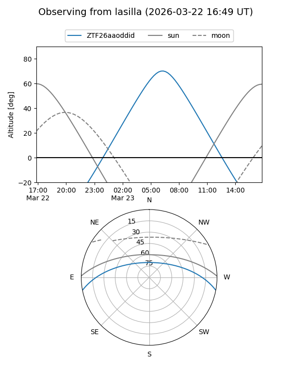
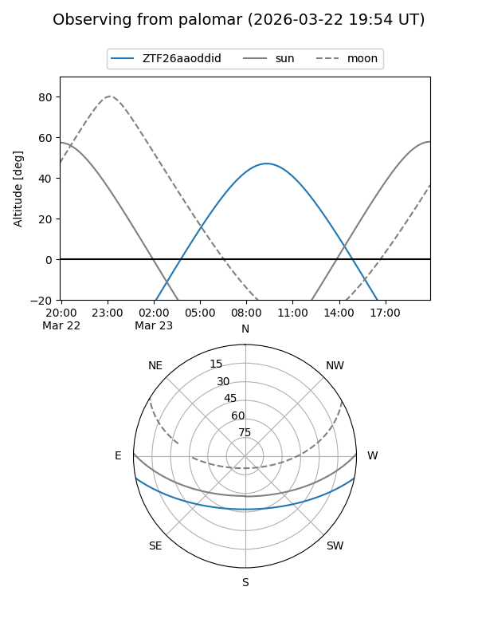

ZTF26aaoddid
Target ZTF26aaoddid at 2026-03-23 09:53
Aliases and brokers:
FINK: link
Lasair: link
ALeRCE: link
alt names
ZTF26aaoddid (ztf,fink_ztf)
Coordinates:
equatorial (ra, dec) = 203.3218,-9.35907
equatorial (HMS+DMS) = 13:33:17.24,-09:21:32.65
galactic (l, b) = (319.9014,+52.12844)
Flags:
Photometry:
last ztfg=20.35
1 ztfg detections
Lightcurve

Visibility


Additional plots